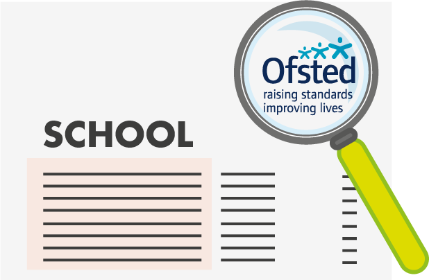
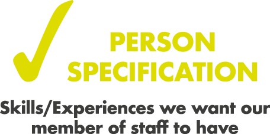
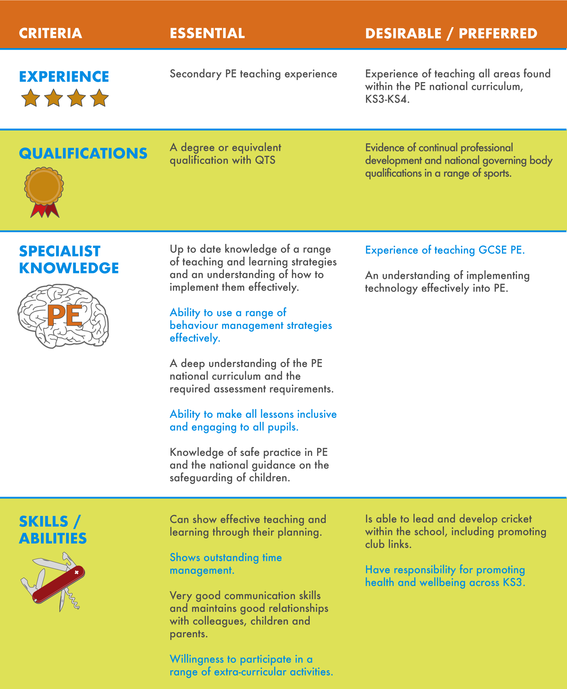
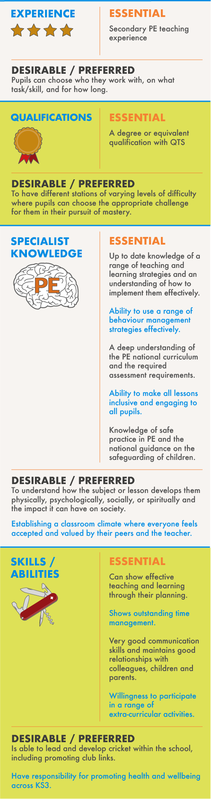
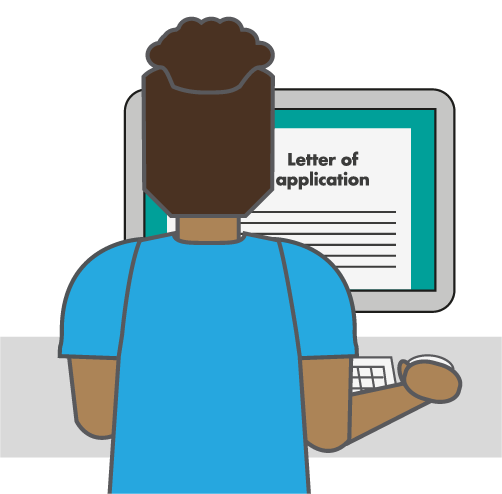
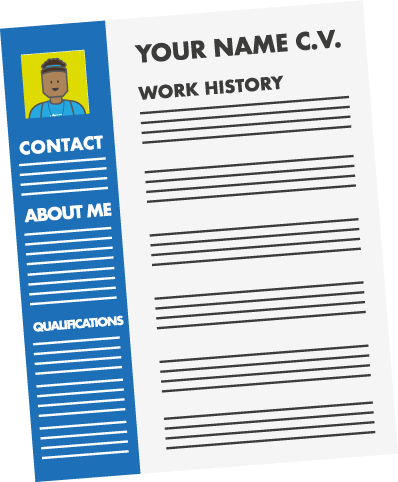

Whether you are a trainee teacher, approaching graduation or are an experienced teacher, the route to searching, applying and successfully gaining a job in education is the same. Firstly, Physical Education (PE) is an incredibly popular subject, causing job applications to be very competitive [1]. This article intends to provide support and remove any misconceptions or worries when approaching the subject of searching for a job within PE.
When searching for a teaching position, the first decision you will likely need to consider is where you will be living and this will help frame your search area. Most search engines are filtered by the postal/zip code of the school, so if you are flexible, then you could potentially widen your search versus somebody who has a set place of residence. Once you have decided upon the area you are hoping to work, there are a few places to look.
For example, if looking in the UK these recommendations are a good starting point:
- Nationwide Teaching Events
- TES jobs
- Guardian jobs
- School/Academy Trust websites
- Social Media
- County Council Websites
The bonus of job search websites are that you can apply “job alerts” to your preferred search, which will then allow you to receive notifications when job advertisements are placed.
If you are approaching the job search as a current trainee teacher, then wherever you apply, you will need to complete your newly qualified teacher (NQT) induction. There are guidelines by the Department for Education [2] that you can check if you are not sure about this induction. It is worth noting that as of the time of writing, induction is based on a year for a full time teacher. Therefore, if you are accepting a part time role, then this will affect your NQT induction [3].
Working outside of England is another consideration for a number of reasons, including curriculum differences and whether your NQT induction will count. Working in some parts of Europe or regions of the United Arab Emirates has become increasingly popular, but you will need to check and confirm if you will complete NQT induction. Again, refer to the DfE [2] guidance. A number of countries will request a minimum number of years’ experience before applying, however it is becoming more common that a number do not. If you have trained in England, then starting your career in England and following the curriculum you have trained in can give you a more confident start to your career.
Once a job has come up that you are interested in, the first reaction can be to apply immediately, however this would not necessarily you place in the strongest position. Having a strong understanding of the area, the school, and the principles that it lives by are just some of the things it is worth taking the time to acknowledge before you begin to apply [1].
Learning about the background of the school - its aims, morals, future plans etc. can let you know where this school stands in relation to your aims and morals in regards to education. Check the schools Ofsted report and their school website. Ask peers/colleagues if they may know of the school. If this will be your NQT induction school, what are their support networks like? Will they support you through the process and allow you to grow as a teacher? Visiting the school is an important factor before applying. It allows you to gain a better idea of the school, its staff, pupils and facilities, but also allows them to meet you and place a face to a name when/if you apply. Whilst there, ask questions that you can then use within your application. Once you have done all of this, this will confirm to you whether it is the school you would like to apply to, but also give you more information than others who may be applying. You will know if the school’s aims, morals, and philosophy align with yours. You will have gained an idea of what the school are looking for and you can begin to reflect on whether you think you have the experiences, skillset and personal qualities to match what they want [1, 3, 4].
By visiting the school, they will have met you and will have seen how enthusiastic you are and got to know more about you. In a Willis and Todorov (2006) study, they found that people take just 100 milliseconds to make a judgement on specific traits, so in your visit: smile, be positive and be complimentary about the school.
As already stated, PE is a very competitive world, so it is important that you take the application stage seriously. This is not only what will allow you to reach the interview stage, but also, Headteachers will have an idea of whom they have a strong interest in.
The application is the documentation where you list what qualifications, employment history and experiences you have, followed by any interests you have. The application form is the document where you typically fill out the objective data, such as qualifications and grades (in level order, then highest grade order), employment history (most recent first) and any other experiences/ qualifications you have, relevant to the role. The covering letter/personal statement is then the place to signpost your skills and ‘sell yourself’.

Schools will often check that applicants have the relevant qualifications and experience before reading the covering letter. When it comes to the covering letter, there is a trick to this and you should not just write about how great you are. The school advertisement will state what you would be doing (job description/key responsibilities) and the skills needed for the job (person specification). It is incredibly important that you include this in your writing, as this is what they have asked for. The key to any job application is to show you can meet these responsibilities and match or succeed the person specification. Therefore, if you match their criteria, then you have a good chance of reaching the interview stage. Furthermore, ensure you check the school website and read their ‘mission statement’, this will help you frame the context of your letter and how you values and aims align [1].
This is highlighting what your contract of employment will include. Often, these can be broken down into general responsibilities, teaching and learning, other professional responsibilities and pastoral responsibilities. You need to ensure you can show that you have experience of these or if not, that you would be capable of carrying these out. This could be written within your application, but may also be asked at interview.
Person Specification: This document is where the school is saying: “these are the skills/experiences we want our member of staff to have”. They are often broken down between essential criteria (what you must have) and desirable/preferred criteria (in a perfect world, we would love for you to have these skills too).
Some employers will also point out if/where these will be assessed during the different processes (application, interview, references).

Below is an example of a Person specification (Figure 1):


When it comes to writing your application, some parts will always remain the same as you apply to different jobs (qualifications, previous jobs, experiences etc), however, as stated, your personal statement should be bespoke for that school. You should use all the information you gathered when “doing your homework” when visiting the school or by asking colleagues or reading their Ofsted report so that you can align it with what the school are looking for. Looking at the example person specification (Figure 1), you must aim to include how you meet each of their essential criteria as a minimum. In this example, you can see there are 11 points to address in the essential column. You would not write these as a list, but include them as experiences that you have had and you could give examples to support your case [3].
You can also elaborate on what else you could offer the school; can you meet any of their desirable criteria for example? What experience do you have? What have you achieved during your teacher training or career so far? You could also include your pedagogical knowledge and subject knowledge, pastoral experience, extra-curricular experience, and your personal teaching philosophy (do be mindful that if you are writing about what your personal philosophy to teaching is, that it aligns with the schools beliefs). You could also include any references to the teacher standards from your previous experiences.

A common mistake in an application is writing about how you feel the school will support you to be a better teacher. Whilst there is a place for this, it is important that you focus on what you and your skills can offer the school. They are not intending to employ you so they can help you. They want you to strengthen the school and the department you will be working in.
As a rule of thumb, your covering letter is best to be kept to a maximum of two sides of A4/US letter size (unless specified). It is very important that you proof read it first and ensure you check your spelling, punctuation and grammar. If there is somebody that you trust, I would recommend that person to read it to check that you have answered the job advertisement. A second opinion is very valuable and draft one of any written work is rarely your best work. Once you are happy, send it in to the school on time, checking you have addressed it to the correct person [1].

These are often not used in education, as they are often answered within the employer application form. However, it is good practice to have a curriculum vitae (CV) and update this as frequently as needed. When you do apply for a job, or even a promotion or leadership role, you can see what you have achieved during your career. In general, your CV or application form is the quantitative data from your past. It lists your qualifications and employment/education history. The bit you can have a say in though, is whom you pick to be your references, who will be contacted by a school if you are invited through to interview. Check that you have the correct details and inform them that you would like them as your referee [6].

References
- Burton, D. (2018) Teach Now! Physical Education: Becoming a Great PE Teacher. London: Routledge.
- The Department for Education (DfE) (2018) Induction for newly qualified teachers (England). Revised April 2018. Available HERE
- Stidder, G. (2015) Becoming a Physical Education Teacher. Oxon: Routledge.
- Golder, G. & Stevens, J. (2015) ‘Beyond your teacher education’ in Capel, S. & Whitehead, M. (eds.) Learning to Teach Physical Education in the Secondary School : A Companion to School Experience, Oxon: Routledge, pp. 271-287.
- Willis, J. & Todorov, A. (2006) First Impressions: Making up Your Mind after a 100-Ms Exposure to a Face Volume. Psychological Science, 17:7, 592-598.
- McGrath, J. & Coles, A. (2016) Your Teacher Training Companion: Essential Skills and Knowledge for Very Busy Trainees. Second Edition. Oxon: Routledge.